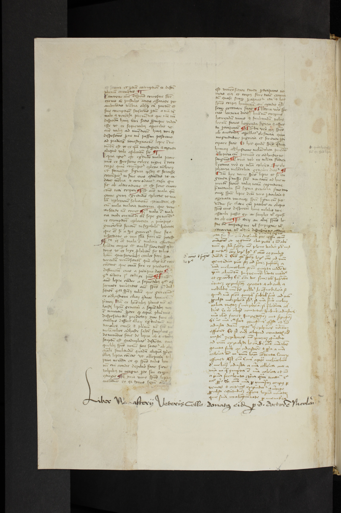

Tiere oder Lebewesen anderer Arten sind für die meisten Bibliotheken Feinde. Nicht nur Mäuse, Ratten oder Vögel nutzen Bücher als Nahrungsmittel oder Nistplätze und gelten somit als Schädlinge, auch Insekten und allen voran der als Bücherwurm bekannte Holzwurm gilt als Schrecken in Büchersammlungen. Denn die Larve des Nagekäfers frisst sich durch hölzerne Bucheinbände und verschmäht auch die Seiten aus Papier oder Pergament nicht. Lässt man sie lang genug gewähren, droht nicht nur der Text durch zahlreiche Lücken unlesbar zu werden, das gesamte Buch fällt ihm zum Opfer. Bibliothekarinnen und Restauratorinnen weltweit sind damit beschäftigt, Lebewesen von Sammlungen fernzuhalten, um die Kulturgüter zu bewahren.1
Aber keineswegs nur Tiere hinterlassen ihre Spuren, sondern natürlich auch Menschen – angefangen von den Herstellerinnen der verwendeten Materialien, den Buchbinderinnen sowie den Schreiberinnen oder Druckerinnen. Steht das Buch erst einmal in einer Bibliothek, sind es die Leserinnen, die darin blättern und nicht selten Eselsohren oder Notizen hinterlassen. Ob man diese Spuren als Schäden interpretiert oder dadurch gar der Wert eines Buches steigt, wenn beispielsweise eine berühmte Autorin ein Buch signiert, hängt jedoch vom Blickwinkel ab.
Buchwissenschaftlerinnen weltweit versuchen mit kriminalistischem Scharfsinn Spuren dieser Art auf die Schliche zu kommen und sammeln Indizien um herauszufinden, wer die Bücher gelesen hat (Rezeptionsforschung), wie Bücher gelesen wurden (Leseforschung) oder woher Bücher kommen und auf welchen Wegen sie an ihren derzeitigen Standort gekommen sind (Provenienzforschung). Wenn Forscherinnen anhand verschiedener Spuren die Biographien von Büchern erforschen, machen sie auch die Bücher – zumindest metaphorisch – zu Lebewesen. Wie Spuren von tierischen Buchbewohnern für die Buchwissenschaft durchaus nützlich sein können, zeigt Ulrich Johannes Schneider anhand des Bücherwurms. Die Larve frisst sich von den Buchdeckeln durch die Seiten und hinterlässt Wurmlöcher und ganze Wurmgänge (Abbildung 1). Solche Löcher finden sich auch auf Texten oder Einzelblättern, die einst zusammengebunden waren, jedoch im 18. und noch im 19. Jahrhundert in zahlreichen Bibliotheken auseinandergenommen wurden. Um solche Sammelbände, die einst Texte teils verschiedener Autorinnen und Themen enthielten, zu rekonstruieren, könne die Buchwurmforschung als Hilfsmittel für die Provenienzforschung dienen.2
Die Mikrobe gilt vor allem als Gefahr – und das nicht nur für Bücher. Mikroben sind Kleinstlebewesen, wie Viren, Bakterien und Pilze. Sie verursachen besonders aufgrund der von ihnen beförderten Verbreitung von Krankheiten Ekel und Angst – wie wir es derzeit ganz aktuell anhand der Pandemie erleben, die das Coronavirus auslöst. Dabei sind Mikroben ein natürlicher Teil unserer Welt und haben nicht selten lebenswichtige Funktionen. Ohne Mikroben könnten wir zwar problemlos den letzten Thriller von Stephen King verdauen, nicht aber den Wein, den wir dazu trinken.
Abbildung 1: Leipzig, Universitätsbibliothek, MS 66: Vorder- und Rückseite des Halbledereinbandes mit zahlreichen Fraßlöchern des Holzbocks. Weitere Löcher, Verfärbungen und Schäden des Einbandes zeugen davon, dass der Einband einst mit Beschlägen verziert war und eine Kette zum Schutz vor Diebstahl angebracht war.
Mikroben auf der Spur
Mikroben sind Kosmopoliten, sie können fast alles und jeden besiedeln. Sichtbar werden sie erst in hoher Konzentration unter dem Mikroskop. Für das bloße Auge erkennbar ist allerdings der Schimmel, der auch das Buch bewohnen kann. Doch auch Schimmel ist mehr als eine drohende Gefahr, die abgewehrt werden muss. Er ist zugleich beredtes Zeugnis für die Schicksale von Büchern. Schimmelspuren weisen darauf hin, dass ein Buch für eine gewisse Zeit einer hohen Konzentration von Feuchtigkeit und einer für darauf eingerichtete Mikroben angenehmen Temperatur ausgesetzt war. Häufig sind unangemessene Lagerbedingungen dafür verantwortlich. Schimmel kann folglich als ein Indiz angesehen werden und auf ganz bestimmte Ereignisse im Leben eines Buches hinweisen.
Aus den Schimmelspuren der mittelalterlichen Handschrift MS 1206 in der Universitätsbibliothek Leipzig (UBL) lässt sich noch mehr herauslesen. Hierbei handelt es sich um eine italienische Papierhandschrift des 15. Jahrhunderts. Zahlreiche Blätter zeugen von Wasser- und Fäulnisschäden (Abbildung 2). Die weggefaulten Teile wurden umfangreich mit nordalpinen Papier ausgebessert und fehlende Textstellen ergänzt. Die Fäulnisschäden sind wahrscheinlich während des Transportes des Buches von Italien über die Alpen nach Deutschland verursacht worden.3 In der Frühen Neuzeit wurden Bücher in Fässern transportiert und nicht selten sehr eng gepackt, da die Transportpreise je Fass berechnet wurden. War das Fass undicht und ist dort einmal Wasser eingedrungen, hatte der Schimmel ideale Bedingungen, sich über die Fracht auszubreiten. Die medizinische Handschrift wurde dem Kloster Altzelle von dem Freiberger Arzt Nikolaus Münzmeister vermacht, wie ein Schenkungsvermerk ausweist. Im Zuge der Säkularisierung gelangte sie in die Leipziger Bibliotheca Paulina und gehört seit 1543 zum Gründungsbestand der Universitätsbibliothek Leipzig.
 Abbildung 2: Leipzig, Universitätsbibliothek, Ms 1206, fol. 1v: Ausschnitt eines ausgebesserten Blattes mit ergänztem Text sowie Beginn des Schenkungsvermerks des Arztes Nikolaus Münzmeister.
Mikroben als Sonden der Buchbiographie
Ist es also möglich, das Werk von Mikroben als Spuren zu deuten und so die Mikroben zum Sprechen zu bringen? Können Biographien des Buches mit Hilfe von Mikroben als Sonden neu geschrieben werden? Diese Fragen stellt sich derzeit das Forschungsprojekt “Kontamination und Lesbarkeit der Welt: Mikroben in Sammlungen zur Sprache bringen.” Gefördert vom BMBF und in Zusammenarbeit mit dem Handschriftenzentrum der Universitätsbibliothek Leipzig erforschen Regina Jucknies und Katharina Therese Gietkowski im Teilprojekt B Mikroben als Sonden der Buchbiographie: Kulturwissenschaftliche Objektstudien zu Spätmittelalterlichen Sammelbänden im Bestand der Universitätsbibliothek Leipzig
, was uns Mikroben über ihren Lebensraum Buch und dessen Biographie berichten können. Dabei arbeiten die Leipziger Forscherinnen zusammen mit der in Braunschweig operierenden Sammlungsphilosophie (Teilprojekt A) und der ebendort wirkenden Mikrobiologie (Teilprojekt C) an neuen Wegen der Lesbarkeit mittelalterlicher Sammelhandschriften.4
Ziel des Teilprojektes B ist es herauszufinden, ob den zahlreichen Methoden der Buchbiographie eine neue an die Seite gestellt werden kann. Können mikrobielle Untersuchungen für die kulturwissenschaftliche Forschung nutzbar gemacht werden? Um die verschiedenen Spuren in den Handschriften zu deuten, bedarf es neben der Kenntnis zahlreicher Methoden besonderen kriminalistischen Scharfsinns: Bei Betrachtung der Handschriften werden vor allem durch ungewollte Spuren viele Fragen aufgeworfen und geben zugleich Hinweise auf den Buchgebrauch: Wie kommen Schmutz, aber auch Wolle oder Stroh in die Bücher? Sind sie Überreste von Lesezeichen oder den Benutzungsumständen? Ist ein Fettfleck möglicherweise durch Wachs entstanden, der von der brennenden Kerze auf die Seite tropfte, während ein Student unter schwierigen Lichtbedingungen den Text studierte?
Wie kommt die Mikrobe ins Buch?
Oft ist das Wissen um das Leben der Bücher nur soweit rekonstruierbar, wie es über Provenienzmerkmale (Spuren der Herkunft) und über weitere Quellen wie Verzeichnisse, Kataloge oder Benutzerbücher überliefert ist. Neben sichtbaren Spuren von Lebewesen sind es die unsichtbaren Spuren der metaphorischen Bücherwürmer, die für die Kontamination der Handschriften durch Mikroben verantwortlich zeichnen.
Wir kennen nie die gesamte Biographie eines Buches und wissen folglich auch nicht immer, wann und unter welchen Umständen Mikroben überhaupt in unsere Handschriften gekommen sind. Wer hat die Bücher aufgeschlagen, darin geblättert, gelesen, mit ihnen gearbeitet oder gar eine Fliege erschlagen? Es ist schwierig sich vorzustellen, durch wie viele Hände eine Handschrift seit ihrer vollständigen Zusammensetzung zu einem gebundenen Band bis zu ihrer heutigen Aufbewahrung im Tresorraum der UBL gegangen ist und was ihr dabei zugestoßen ist.
Um zu versuchen, das Leben mittelalterlicher Handschriften in den letzten Jahrhunderten nachzuvollziehen, wird an der UBL ein Blick in die Gegenwart geworfen und das heutige Leben der Handschriften dokumentiert. Dazu wird für den Zeitraum von drei Monaten ein im Projekt entwickeltes Berührungsprotokoll geführt. Hierbei soll jeder, der eine Handschrift in die Hand nimmt, dies auf einem laufenden Zettel dokumentieren, bis die Handschrift wieder zurück an ihren Aufbewahrungsort gebracht wird. Angefangen von der Person, die die Handschrift aus dem Magazin nimmt (Ausheben) bis zur Benutzerin, seien es die studentischen Hilfskräfte, die Metadaten erfassen, die wissenschaftlichen Mitarbeiterinnen, die Handschriften katalogisieren und erforschen, die Restauratorinnen in der Werkstatt, die Mitarbeiterinnen in der Digitalisierungswerkstatt, die Forschenden im Lesesaal oder die Aufsichtsperson, die sie überreicht. Jede hat einzutragen, wann und wie lange sie die Handschrift benutzt beziehungsweise berührt hat, ebenso warum sie die Handschrift berührt hat und welche Teile davon. So soll rekonstruiert werden, wie viele Berührungen und damit Kontaminationen bei dem jeweiligen Geschäftsgang (das heißt einem standardisierten und wiederkehrenden Ablauf) bei einer Handschrift heute erfolgen. Einen ersten Eindruck in die vielfältige Arbeit des Handschriftenzentrums der Universitätsbibliothek Leipzig gibt ein Video, das die Digitalisierung mittelalterlicher Handschriften beschreibt und das bereits die Vielzahl der Berührungen erahnen lässt.5
Biographien mittelalterlicher Sammelbände
Das Leben eines Buches beginnt nicht erst mit seiner Benutzung.6 Zur Biographie gehört bereits die Herstellung der verwendeten Materialien wie Papier, Pergament, Tinten und Farben für die Buchmalereien, Initialen und Rubrizierungen. Häufig werden aus Kostengründen mehrere Texte sogar verschiedener Formate zusammengebunden (Abbildung 3). Der verwendete, einfache oder mit Leder überzogene, teils ausgeschmückte (Holz-)Einband schützt die Materialien vor Schmutz und Feuchtigkeit und dient als Träger von Zeichen seiner Herkunft, darunter Namen ehemaliger Besitzerinnen oder Signaturen der besitzenden Institutionen. Der Herstellung folgt das aktive Leben der Bücher. Handschriften haben oft viele Reisen unternommen und lagen oder standen auf vielen Regalen, Tischen und in Kisten, ehe sie an ihren derzeitigen Standort gekommen sind. Sie überlebten vielleicht Katastrophen wie Brände, Kriege und Fluten. Einige Lebensstationen sind mit dem bloßen Auge sichtbar, einige Merkmale sprechen für sich, die meisten aber sind Indizien, die gelesen und gedeutet werden müssen. Das erfordert neue Ansätze, neue Sichtweisen, neue Einschätzungen. Die Spurensuche in mittelalterlichen Handschriften im Rahmen des vom BMBF geförderten Projektes wird ab März 2021 in einer Ausstellung an der Universitätsbibliothek Leipzig gezeigt, zu der auch ein Katalog erscheinen wird.
 Abbildung 3: Leipzig, Universitätsbibliothek, Ms 768 (Foto: Olaf Mokansky): In diesem Einband sind Texte unterschiedlicher Herkunft und Größe zusammengebunden.
Abbildung 3: Leipzig, Universitätsbibliothek, Ms 768 (Foto: Olaf Mokansky): In diesem Einband sind Texte unterschiedlicher Herkunft und Größe zusammengebunden.
Literatur
Jucknies, Regina: Ältere Gelehrsamkeiten und neuere Gedankengüter. Objektbiographien lateinischer und deutscher Sammelhandschriften der UB Leipzig. In: Sabine Walther u.a. (Hgg.): Res, Artes et Religio. Essays in Honor of Rudolf Simek. Leeds 2020. (In Druck)
Mackert, Christoph: Bartholomaeus Montagna, Consilia medica. Universitätsbibliothek Leipzig MS 1206. Siehe: http://www.manuscripta-mediaevalia.de/dokumente/html/obj31569704
Schneider, Ulrich Johannes: Das Buch und sein Wurm. In: Constanze Baum, Ulrike Gleixner, Jörn Münkner und Hole Rößler (Hgg.): Biographien des Buches. 1. Aufl. Göttingen 2017, S. 277–290.
Es wird im gesamten Artikel die weibliche Form verwendet, die auch die männliche miteinschließt.↩︎
Schneider, Ulrich Johannes: Das Buch und sein Wurm. In: Constanze Baum, Ulrike Gleixner, Jörn Münkner und Hole Rößler (Hg.): Biographien des Buches. 1. Aufl. Göttingen 2017, S. 277–290.↩︎
Mackert, Christoph: Leipzig, Universitätsbibliothek MS 1206. Siehe: http://www.manuscripta-mediaevalia.de/dokumente/html/obj31569704↩︎
Das interdisziplinäre Verbundprojekt “Kontamination und Lesbarkeit der Welt: Mikroben in Sammlungen zur Sprache bringen” besteht aus dem Team des Handschriftenzentrums der Universitätsbibliothek Leipzig unter der Leitung von Dr. Christoph Mackert und arbeitet zusammen mit dem Seminar für Philosophie der TU Braunschweig (Prof. Dr. Nicole C. Karafyllis, Dr. Alexander Waszynski, Dr. Uwe Lammers) und dem Leibniz-Institut Deutsche Sammlung von Mikroorganismen und Zellkulturen (DSMZ), Braunschweig (Prof. Dr. Jörg Overmann, Dr. Cecilia Flocco). Siehe Projektseite unter: https://www.tu-braunschweig.de/philosophie/mikrobib Nähere Informationen zum Teilprojekt B (LIBER) der Universitätsbibliothek Leipzig siehe unter: https://www.ub.uni-leipzig.de/forschungsbibliothek/projekte/projekte-chronologisch-alle/mikroben-als-sonden-der-buchbiographie/↩︎
Aus dem Tresor in die Welt. Wie das Digitalisat einer mittelalterlichen Handschrift entsteht
. 31.07.2020. Siehe: https://youtu.be/P0l19JYNaj0↩︎Zum Begriff Biographie und der Metapher des Lebens für die Objektforschung vgl. Regina Jucknies: Ältere Gelehrsamkeiten und neuere Gedankengüter. Objektbiographien lateinischer und deutscher Sammelhandschriften der UB Leipzig. In: Sabine Walther u.a. (Hgg.): Res, Artes et Religio. Essays in Honor of Rudolf Simek. Leeds: 2020.↩︎
Katharina Therese Gietkowski studierte Kunstgeschichte, Anglistik, Buchwissenschaft und Textforschung sowie Europäische Ethnologie an der Westfälischen Wilhelms-Universität Münster und der Università Suor Orsola Benincasa in Neapel. Es folgte ein Masterstudium der Bibliotheks- und Informationswissenschaft an der Hochschule für Technik, Wirtschaft und Kultur (HTWK) in Leipzig. Von 2014 bis 2015 war sie an der Herzog August Bibliothek Wolfenbüttel als wissenschaftliche Bibliothekarin in der Abteilung Alte Drucke tätig. Seit 2015 promoviert Katharina Gietkowski im Graduiertenkolleg „Wissensspeicher und Argumentationsarsenal. Funktionen der Bibliothek in den kulturellen Zentren im Europa der Frühen Neuzeit“ am IKFN der Universität Osnabrück. Als wissenschaftliche Mitarbeiterin arbeitet sie seit 2019 im Handschriftenzentrum der Universitätsbibliothek Leipzig im BMBF-Teilprojekt „Mikroben als Sonden der Buchbiographie. Kulturwissenschaftliche Objektstudien zu Spätmittelalterlichen Sammelbänden im Bestand der Universitätsbibliothek Leipzig.“